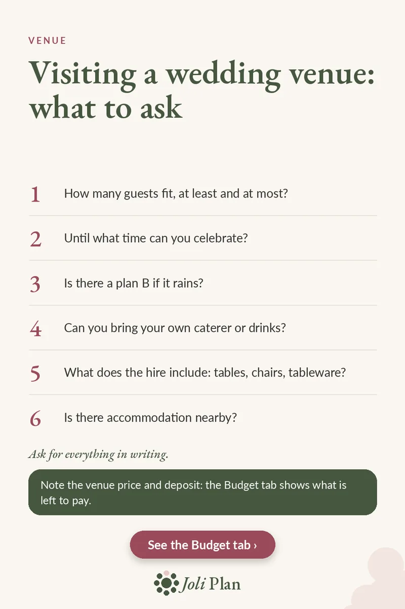

Venue
Wedding venue viewing: 6 questions to ask
Updated on 11/11/2026
On a venue viewing everything looks lovely, and the practical questions are easy to forget. Take this list of six with you: it helps you avoid awkward surprises and extra costs later.
See the wedding planner on Etsy ›

The 6 questions
- How many guests fit, at least and at most?
- Until what time can you celebrate?
- Is there a plan B if it rains?
- Can you bring your own caterer or drinks?
- What does the hire include: tables, chairs, tableware?
- Is there accommodation nearby?
Why these questions matter
Guest numbers decide whether the venue suits you at all. A room that is too big feels empty and one that is too small feels crowded, so ask for the minimum and the maximum.
The finish time shapes your order of the day and how long you can dance, so know it before you book a band or DJ.
A rain plan is simply a question of where everyone goes if the weather turns, and whether there is enough space for them all.
What the hire includes
Two venues at the same price can be very different. At one, tables, chairs and tableware are included; at the other, you hire everything separately. Ask for the inclusions to be listed item by item so you can compare quotes fairly.
Ask too whether you can bring your own caterer or drinks. Some venues require their own, and that changes your whole budget.
Ask for everything in writing
Have the answers confirmed in writing, ideally in the contract or an email. Spoken promises are easily forgotten, especially if a different person looks after your day.
If guests are travelling far, the question about nearby accommodation lets you share suggestions with them early.
Record the price and deposit
After the viewing, note the venue price and deposit in your budget. You can then see at any time what is left to pay and when.
Frequently asked questions
What should I ask when viewing a wedding venue?
How many guests fit, the finish time, the rain plan, whether you can bring your own caterer or drinks, what the hire includes and whether there is accommodation nearby.
How do I make sure the answers hold?
Ask for everything in writing, ideally in the contract.